Árvores Binárias de Busca¶
Material de Apoio
Você pode acompanhar este capítulo utilizando os Slides sobre Árvores Binárias.
1. Revisão Motivadora: Busca Binária em Vetores¶
1.1 O Problema da Busca Eficiente¶
Considere que precisamos verificar se um número x está presente em um conjunto de dados.
| Estratégia | Requisito | Complexidade (Pior Caso) |
|---|---|---|
| Busca linear | Nenhum | O(n) |
| Busca binária | Dados ordenados | O(log n) |
1.2 Busca Binária em Vetor Ordenado¶
// Busca binária iterativa em vetor ordenado
int buscaBinaria(int vetor[], int n, int chave) {
int esq = 0, dir = n - 1;
while (esq <= dir) {
int meio = (esq + dir) / 2;
if (vetor[meio] == chave)
return meio; // Encontrou!
else if (chave < vetor[meio])
dir = meio - 1; // Busca na metade esquerda
else
esq = meio + 1; // Busca na metade direita
}
return -1; // Não encontrado
}
Funcionamento:
Vetor: [2, 5, 8, 12, 16, 23, 38, 45, 56, 67, 78]
Buscando: 23
Passo 1: [2...78] → meio=23 ✓ Encontrado em 1 comparação!
Buscando: 15
Passo 1: [2...78] → meio=23 → 15 < 23 → busca esquerda
Passo 2: [2...16] → meio=8 → 15 > 8 → busca direita
Passo 3: [12...16] → meio=12 → 15 > 12 → busca direita
Passo 4: [16] → meio=16 → 15 < 16 → busca esquerda
Passo 5: esq > dir → Não encontrado (4 comparações)
Vantagem: Em vez de verificar todos os
nelementos, a busca binária elimina metade dos candidatos a cada comparação.
1.3 Limitação do Vetor para Inserções Dinâmicas¶
// Problema: inserir um novo elemento mantendo a ordem
// Vetor: [2, 5, 8, 12, 16, 23, 38]
// Queremos inserir: 10
// Passo 1: encontrar posição (busca binária) → O(log n) ✓
// Passo 2: deslocar elementos para abrir espaço → O(n) ✗
// [2, 5, 8, _, 12, 16, 23, 38]
// [2, 5, 8, 10, 12, 16, 23, 38]
| Operação | Vetor Ordenado | Lista Encadeada |
|---|---|---|
| Busca | O(log n) ✓ | O(n) ✗ |
| Inserção | O(n) ✗ | O(1)* ✓ |
| Remoção | O(n) ✗ | O(1)* ✓ |
*Considerando que já temos o ponteiro para a posição
Pergunta motivadora: Existe uma estrutura que combine:
- Busca eficiente como a binária (O(log n))
- Inserção/remoção dinâmica sem deslocamentos?
Resposta: Sim! Árvores Binárias de Busca (ABB).
2. Árvores Binárias de Busca: Definição e Propriedade Fundamental¶
2.1 Definição Formal¶
Uma Árvore Binária de Busca (ABB) é uma árvore binária que satisfaz a seguinte propriedade:
Propriedade da ABB: Para todo nó
vda árvore: - Todos os valores na subárvore à esquerda devsão menores quev.info- Todos os valores na subárvore à direita devsão maiores quev.info- As subárvores à esquerda e à direita também são ABBs (recursividade)
2.2 Exemplos Visuais¶
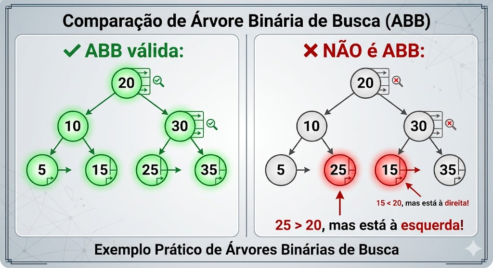
2.3 Consequência Importante: Percurso Em-Ordem¶
Teorema: O percurso em-ordem (Esquerda → Raiz → Direita) de uma ABB retorna os elementos em ordem crescente.
// Percurso em-ordem (já visto no capítulo anterior)
void emOrdem(No* raiz) {
if (raiz != NULL) {
emOrdem(raiz->esquerda);
printf("%d ", raiz->valor);
emOrdem(raiz->direita);
}
}
// Para a ABB acima:
// Saída: 5 10 15 20 25 30 35 ← Ordenado! ✓
Esta propriedade é extremamente útil para: - Imprimir dados ordenados sem algoritmo de ordenação adicional - Validar se uma árvore é uma ABB - Obter o k-ésimo menor elemento com adaptações
3. Implementação em Linguagem C¶
3.1 Definição do Tipo de Dado¶
#include <stdio.h>
#include <stdlib.h>
#include <stdbool.h>
// Definição do nó da ABB (valores inteiros)
typedef struct No {
int valor; // Chave de busca (pode ser adaptado para outros tipos)
struct No* esquerda; // Ponteiro para subárvore à esquerda
struct No* direita; // Ponteiro para subárvore à direita
} No;
3.2 Função Auxiliar: Criar Novo Nó¶
// Cria um novo nó com o valor informado
No* criarNo(int valor) {
No* novo = (No*) malloc(sizeof(No));
if (novo == NULL) {
fprintf(stderr, "Erro: falha ao alocar memória\n");
exit(EXIT_FAILURE);
}
novo->valor = valor;
novo->esquerda = NULL;
novo->direita = NULL;
return novo;
}
3.3 Operação 1: Busca (Iterativa e Recursiva)¶
a) Versão Recursiva (mais elegante)¶
// Busca recursiva: retorna ponteiro para o nó ou NULL se não encontrado
No* buscar(No* raiz, int chave) {
// Caso base 1: árvore vazia ou chegou em folha sem encontrar
if (raiz == NULL) {
return NULL;
}
// Caso base 2: encontrou a chave
if (raiz->valor == chave) {
return raiz;
}
// Caso recursivo: decide para qual subárvore seguir
if (chave < raiz->valor) {
return buscar(raiz->esquerda, chave); // Busca à esquerda
} else {
return buscar(raiz->direita, chave); // Busca à direita
}
}
b) Versão Iterativa (mais eficiente em espaço)¶
// Busca iterativa: mesma lógica, sem recursão
No* buscarIterativo(No* raiz, int chave) {
No* atual = raiz;
while (atual != NULL) {
if (chave == atual->valor) {
return atual; // Encontrou!
} else if (chave < atual->valor) {
atual = atual->esquerda; // Vai para esquerda
} else {
atual = atual->direita; // Vai para direita
}
}
return NULL; // Não encontrou
}
c) Exemplo de Execução Passo a Passo¶
ABB:
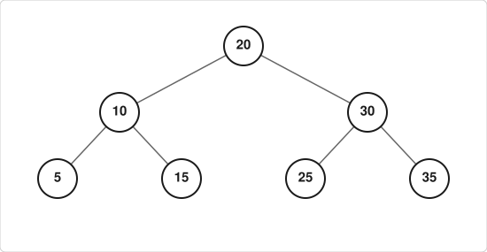
Busca por 25:
- raiz=20 → 25 > 20 → vai para direita
- atual=30 → 25 < 30 → vai para esquerda
- atual=25 → 25 == 25 ✓ Encontrado! (3 comparações)
Busca por 18:
- raiz=20 → 18 < 20 → vai para esquerda
- atual=10 → 18 > 10 → vai para direita
- atual=15 → 18 > 15 → vai para direita
- atual=NULL → ✗ Não encontrado (4 comparações)
3.4 Operação 2: Inserção¶
Estratégia: Sempre inserir como folha, na posição correta determinada pela propriedade da ABB.
// Insere um novo valor na ABB (versão recursiva)
// Retorna a raiz da árvore (pode mudar na primeira inserção)
No* inserir(No* raiz, int valor) {
// Caso base: encontrou posição vazia → cria novo nó
if (raiz == NULL) {
return criarNo(valor);
}
// Valor já existe → não insere duplicatas (opcional)
if (valor == raiz->valor) {
return raiz; // ou tratar erro, dependendo da aplicação
}
// Decide para qual subárvore inserir recursivamente
if (valor < raiz->valor) {
raiz->esquerda = inserir(raiz->esquerda, valor);
} else {
raiz->direita = inserir(raiz->direita, valor);
}
return raiz; // Retorna a mesma raiz (estrutura não mudou no nível atual)
}
Exemplo Visual de Inserções Sequenciais¶
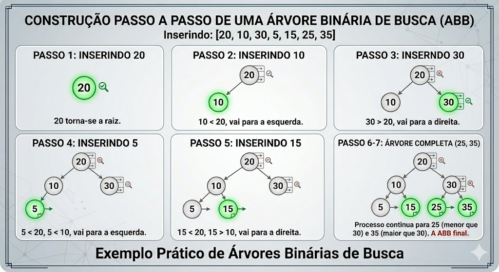
3.5 Operação 3: Remoção (Caso Mais Complexo)¶
Desafio: Remover um nó mantendo a propriedade da ABB.
Existem três casos a considerar:
Caso 1: Nó é uma folha (sem filhos)¶
Antes (remover o nó 5, marcado com ↑):
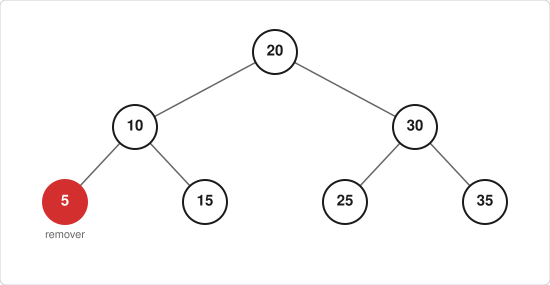
Depois:
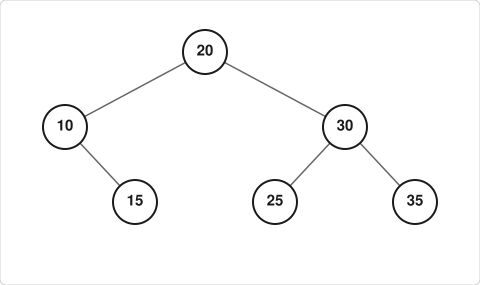
Implementação: simplesmente libera o nó e retorna NULL.
Caso 2: Nó tem um único filho¶
Antes (remover o nó 10, marcado com ↑):
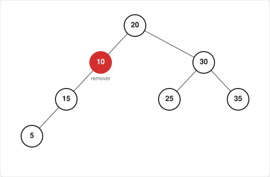
Depois:
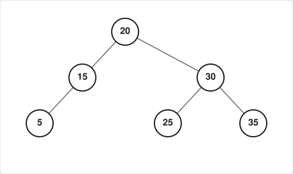
Implementação: "puxa" o filho para o lugar do pai.
Caso 3: Nó tem dois filhos (mais complexo)¶
Estratégia: Substituir o valor do nó a ser removido pelo: - Sucessor: menor valor da subárvore à direita (mais à esquerda), ou - Antecessor: maior valor da subárvore à esquerda (mais à direita)
Passo 0 — Antes (remover o nó 20):
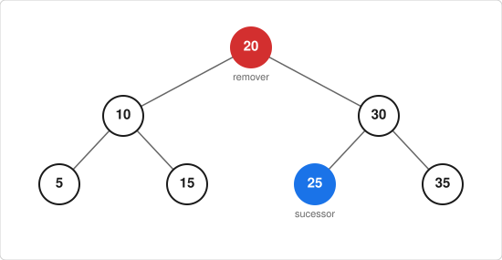
O sucessor de 20 é o menor valor da subárvore direita: 25.
Passo 1 — substituir 20 por 25 (duplicado temporário):
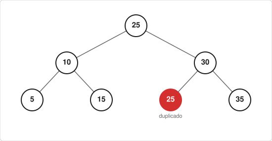
Passo 2 — remover o nó 25 original (agora duplicado):
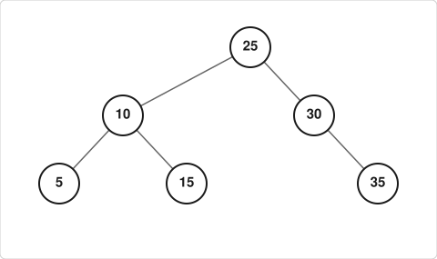
Implementação Completa da Remoção¶
// Função auxiliar: encontra o nó com menor valor (mais à esquerda)
No* encontrarMinimo(No* raiz) {
while (raiz != NULL && raiz->esquerda != NULL) {
raiz = raiz->esquerda;
}
return raiz;
}
// Remove um valor da ABB e retorna a nova raiz da subárvore
No* remover(No* raiz, int chave) {
// Caso base: árvore vazia
if (raiz == NULL) {
return NULL;
}
// Encontra o nó a ser removido (busca padrão de ABB)
if (chave < raiz->valor) {
raiz->esquerda = remover(raiz->esquerda, chave);
} else if (chave > raiz->valor) {
raiz->direita = remover(raiz->direita, chave);
}
// Encontrou o nó: três casos
else {
// Caso 1: nó sem filhos ou com um filho à direita
if (raiz->esquerda == NULL) {
No* temp = raiz->direita;
free(raiz);
return temp;
}
// Caso 2: nó com um filho à esquerda
else if (raiz->direita == NULL) {
No* temp = raiz->esquerda;
free(raiz);
return temp;
}
// Caso 3: nó com dois filhos
else {
// Encontra o sucessor (menor da subárvore direita)
No* sucessor = encontrarMinimo(raiz->direita);
// Copia o valor do sucessor para o nó atual
raiz->valor = sucessor->valor;
// Remove o sucessor da subárvore direita (recursivamente)
raiz->direita = remover(raiz->direita, sucessor->valor);
}
}
return raiz;
}
3.6 Funções Utilitárias¶
// Libera toda a memória (pós-ordem)
void liberarABB(No* raiz) {
if (raiz != NULL) {
liberarABB(raiz->esquerda);
liberarABB(raiz->direita);
free(raiz);
}
}
// Imprime a ABB com identação (visualização hierárquica)
void imprimirABB(No* raiz, int nivel) {
if (raiz == NULL) return;
// Imprime subárvore direita primeiro (para visualização deitada)
imprimirABB(raiz->direita, nivel + 1);
// Imprime identação e valor
for (int i = 0; i < nivel; i++) printf(" ");
printf("%d\n", raiz->valor);
// Imprime subárvore esquerda
imprimirABB(raiz->esquerda, nivel + 1);
}
// Conta o número de nós
int contarNos(No* raiz) {
if (raiz == NULL) return 0;
return 1 + contarNos(raiz->esquerda) + contarNos(raiz->direita);
}
// Calcula a altura da árvore
int altura(No* raiz) {
if (raiz == NULL) return -1;
int hEsq = altura(raiz->esquerda);
int hDir = altura(raiz->direita);
return 1 + (hEsq > hDir ? hEsq : hDir);
}
4. Código Completo de Exemplo¶
#include <stdio.h>
#include <stdlib.h>
typedef struct No {
int valor;
struct No* esquerda;
struct No* direita;
} No;
No* criarNo(int valor) {
No* novo = (No*) malloc(sizeof(No));
if (!novo) { fprintf(stderr, "Erro de alocação\n"); exit(1); }
novo->valor = valor;
novo->esquerda = novo->direita = NULL;
return novo;
}
No* buscar(No* raiz, int chave) {
if (!raiz || raiz->valor == chave) return raiz;
return (chave < raiz->valor) ? buscar(raiz->esquerda, chave)
: buscar(raiz->direita, chave);
}
No* inserir(No* raiz, int valor) {
if (!raiz) return criarNo(valor);
if (valor < raiz->valor)
raiz->esquerda = inserir(raiz->esquerda, valor);
else if (valor > raiz->valor)
raiz->direita = inserir(raiz->direita, valor);
return raiz;
}
No* encontrarMinimo(No* raiz) {
while (raiz && raiz->esquerda) raiz = raiz->esquerda;
return raiz;
}
No* remover(No* raiz, int chave) {
if (!raiz) return NULL;
if (chave < raiz->valor)
raiz->esquerda = remover(raiz->esquerda, chave);
else if (chave > raiz->valor)
raiz->direita = remover(raiz->direita, chave);
else {
if (!raiz->esquerda) {
No* temp = raiz->direita;
free(raiz);
return temp;
} else if (!raiz->direita) {
No* temp = raiz->esquerda;
free(raiz);
return temp;
} else {
No* sucessor = encontrarMinimo(raiz->direita);
raiz->valor = sucessor->valor;
raiz->direita = remover(raiz->direita, sucessor->valor);
}
}
return raiz;
}
void emOrdem(No* raiz) {
if (raiz) {
emOrdem(raiz->esquerda);
printf("%d ", raiz->valor);
emOrdem(raiz->direita);
}
}
void imprimirABB(No* raiz, int nivel) {
if (!raiz) return;
imprimirABB(raiz->direita, nivel + 1);
for (int i = 0; i < nivel; i++) printf(" ");
printf("%d\n", raiz->valor);
imprimirABB(raiz->esquerda, nivel + 1);
}
void liberarABB(No* raiz) {
if (raiz) {
liberarABB(raiz->esquerda);
liberarABB(raiz->direita);
free(raiz);
}
}
int main() {
No* raiz = NULL;
// Inserindo valores
int valores[] = {20, 10, 30, 5, 15, 25, 35};
for (int i = 0; i < 7; i++) {
raiz = inserir(raiz, valores[i]);
}
printf("Árvore após inserções (visualização rotacionada 90°):\n");
imprimirABB(raiz, 0);
printf("\nPercurso em-ordem (deve sair ordenado): ");
emOrdem(raiz);
printf("\n");
// Testando busca
int chave = 25;
if (buscar(raiz, chave))
printf("✓ %d encontrado na árvore\n", chave);
else
printf("✗ %d não encontrado\n", chave);
// Removendo um nó com dois filhos
printf("\nRemovendo 20 (nó com dois filhos)...\n");
raiz = remover(raiz, 20);
imprimirABB(raiz, 0);
printf("\nEm-ordem após remoção: ");
emOrdem(raiz);
printf("\n");
// Estatísticas
printf("\nEstatísticas:\n");
printf(" Nós: %d\n", contarNos(raiz));
printf(" Altura: %d\n", altura(raiz));
liberarABB(raiz);
return 0;
}
Saída esperada:
Árvore após inserções (visualização rotacionada 90°):
35
30
25
20
15
10
5
Percurso em-ordem (deve sair ordenado): 5 10 15 20 25 30 35
✓ 25 encontrado na árvore
Removendo 20 (nó com dois filhos)...
35
30
25
25
15
10
5
Em-ordem após remoção: 5 10 15 25 30 35
Estatísticas:
Nós: 6
Altura: 3
5. Análise de Complexidade¶
5.1 Fator Determinante: Altura da Árvore¶
Todas as operações básicas (busca, inserção, remoção) dependem do caminho da raiz até uma folha, ou seja, da altura h da árvore.
| Operação | Complexidade |
|---|---|
| Busca | O(h) |
| Inserção | O(h) |
| Remoção | O(h) |
| Em-ordem (todos os nós) | O(n) |
5.2 Melhor Caso vs. Pior Caso¶
Melhor Caso: Árvore Balanceada (cheia/completa)
- Altura
h ≈ log₂(n) - Complexidade:
O(log n)✓
Exemplo (n=7, h=2):
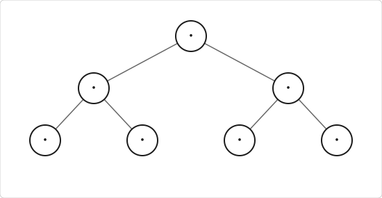
Pior Caso: Árvore Degenerada (linear)
- Altura
h = n-1 - Complexidade:
O(n)✗ (equivalente a lista encadeada)
Exemplo (inserção em ordem crescente):
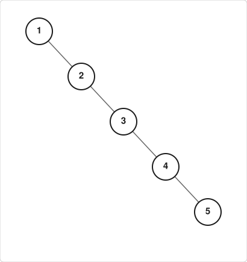
5.3 Tabela Comparativa: ABB vs. Outras Estruturas¶
| Estrutura | Busca | Inserção | Remoção | Ordenação Natural |
|---|---|---|---|---|
| Vetor não-ordenado | O(n) | O(1)* | O(n) | ✗ |
| Vetor ordenado | O(log n) | O(n) | O(n) | ✓ |
| Lista encadeada | O(n) | O(1)** | O(1)** | ✗ |
| ABB (balanceada) | O(log n) | O(log n) | O(log n) | ✓ |
| ABB (degenerada) | O(n) | O(n) | O(n) | ✓ |
Inserção no final; *Considerando ponteiro para a posição
6. Exercícios para Fixação¶
Exercício 1 — Construção Manual¶
Dada a sequência de inserções: [50, 30, 70, 20, 40, 60, 80, 10]
a) Desenhe a ABB resultante passo a passo.
b) Qual a altura da árvore final?
c) Escreva o percurso em-ordem (deve sair ordenado).
d) Quantas comparações são necessárias para buscar o valor 10?
Gabarito parcial
**a) Árvore final:**  b) Altura = 3 (caminho 50→30→20→10) c) Em-ordem: 10 20 30 40 50 60 70 80 d) Busca por 10: 50→30→20→10 = 4 comparaçõesExercício 2 — Remoção Passo a Passo¶
Partindo da árvore do Exercício 1, execute as remoções na ordem: [30, 70, 50]
a) Para cada remoção, identifique qual caso se aplica (0, 1 ou 2 filhos).
b) Desenhe a árvore após cada remoção.
c) Verifique se a propriedade da ABB foi mantida.
Exercício 3 — Validação de ABB¶
Implemente uma função que verifique se uma árvore binária qualquer é uma ABB válida:
Dica: Não basta verificar
esquerda < raiz < direitalocalmente. É necessário garantir que todos os nós da subárvore esquerda sejam menores que a raiz, e todos da direita sejam maiores. Uma abordagem eficiente usa limites mínimos e máximos propagados recursivamente.
Esboço de solução
Exercício 4 — Altura Mínima e Máxima¶
Para uma ABB com n = 15 nós:
a) Qual a menor altura possível? Qual tipo de árvore atinge esse valor?
b) Qual a maior altura possível? Qual sequência de inserções produz essa árvore?
c) Calcule a diferença no número máximo de comparações para busca entre os dois casos.
Respostas
Exercício 5 — Desafio: Inserção em Lote¶
Escreva uma função que receba um vetor de inteiros e construa uma ABB contendo todos os valores:
Teste com:
- Vetor aleatório:
[42, 17, 89, 5, 33, 71, 12] - Vetor ordenado:
[1, 2, 3, 4, 5, 6, 7]← Atenção ao resultado!
Compare a altura das duas árvores resultantes.
7. Questionamento Final: O Problema da Degeneração¶
7.1 Experimento Mental¶
Considere inserir os valores em ordem crescente: [1, 2, 3, 4, 5, 6, 7]
Passo 1 — insere 1:
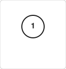
Passo 4 — insere 1,2,3,4:
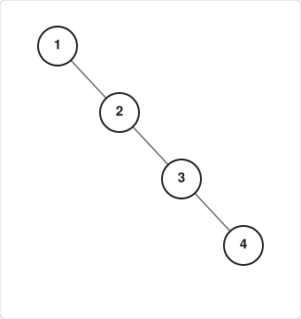
Passo 7 — insere 1,2,3,4,5,6,7 → árvore degenerada:
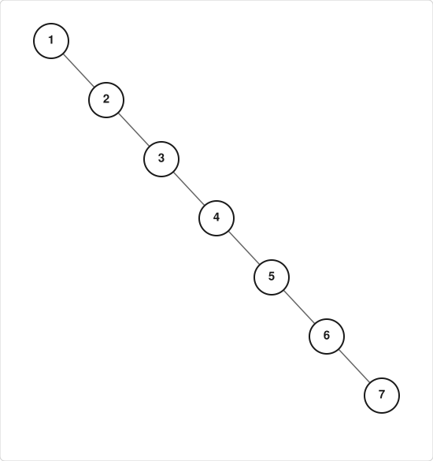
7.2 Consequências¶
| Métrica | Árvore Balanceada | Árvore Degenerada |
|---|---|---|
| Altura | ≈ log₂(7) = 2~3 | 6 |
| Busca (pior caso) | 3 comparações | 7 comparações |
| Inserção | O(log n) | O(n) |
| Uso de memória (pilha recursiva) | O(log n) | O(n) — risco de estouro |
Problema: A ABB não garante balanceamento automaticamente. A estrutura final depende da ordem de inserção dos dados.
7.3 Pergunta para Reflexão¶
Se inserirmos dados já ordenados (comum em aplicações reais: registros por timestamp, IDs sequenciais, etc.), a ABB degenera para uma estrutura linear, perdendo sua vantagem de O(log n).
Como resolver?
🔜 Próximo capítulo: Árvores Balanceadas
• AVL: balanceamento por fator de altura
• Rubro-Negra: balanceamento por cores e regras de rotação
• Ideia central: realizar rotações durante inserção/remoção
para manter a altura próxima de log₂(n)
Exemplo de rotação simples (AVL):
Antes da rotação (desbalanceada à direita):
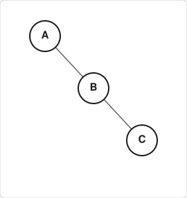
Após rotação à esquerda:
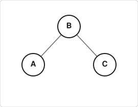
- A altura diminui de 2 para 1
- A propriedade da ABB é preservada
- Operações continuam em O(log n) garantido
8. Resumo do Capítulo¶
Conexão com busca binária
- ABB generaliza a busca binária para estrutura dinâmica
- Mantém dados "virtualmente ordenados" sem necessidade de vetor contíguo
Propriedade fundamental da ABB
- Esquerda < Raiz < Direita (para todos os nós, recursivamente)
- Percurso em-ordem retorna elementos ordenados
Operações básicas em C
buscar(): O(h) — recursiva ou iterativainserir(): O(h) — sempre como folha, mantendo a propriedaderemover(): O(h) — três casos (0, 1 ou 2 filhos), uso do sucessor/antecessor
Análise de complexidade
- Depende da altura
h: O(h) para operações pontuais - Melhor caso (balanceada): h ≈ log n → O(log n)
- Pior caso (degenerada): h = n-1 → O(n)
Boas práticas
- Sempre verificar
malloc - Liberar memória com
free()em pós-ordem - Evitar duplicatas (ou definir política de tratamento)
- Considerar altura ao projetar aplicações críticas
Limitação importante
- ABB não se auto-balanceia → ordem de inserção impacta desempenho
- Gancho para estudo de árvores AVL e Rubro-Negras
9. Próximos Passos¶
Tópicos do próximo capítulo: Árvores Balanceadas
- Fator de balanceamento e altura
- Rotações simples e duplas (LL, RR, LR, RL)
- Inserção e remoção em AVL com rebalanceamento
- Comparação prática: ABB vs. AVL em cenários reais
Leitura recomendada:
- ZIVIANI, N. Projeto de Algoritmos. Seção 5.3: Árvores Binárias de Busca.
- CORMEN et al. Introduction to Algorithms. Capítulo 12: Binary Search Trees.
Prática sugerida:
- Compile e teste o código completo da Seção 4
- Implemente a função
ehABB()do Exercício 3 - Experimente inserir sequências ordenadas e aleatórias, medindo a altura resultante
- (Desafio) Implemente uma função que imprime a ABB em formato gráfico ASCII
Dica para provas: Ao desenhar ABBs, sempre verifique a propriedade "esquerda < raiz < direita" para todos os nós, não apenas os vizinhos. Um erro comum é validar apenas localmente e esquecer que um nó na subárvore esquerda deve ser menor que todos os ancestrais à direita.
Material elaborado para a disciplina de Estrutura de Dados — Curso de Engenharia de Computação
Prof. Sérgio Souza Costa | Atualizado: 2026